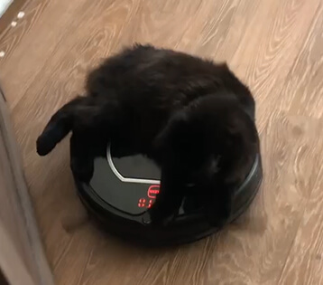
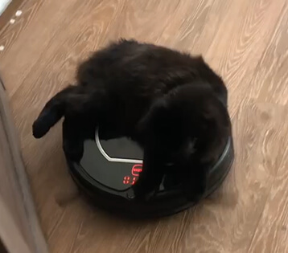

Здраве
Котето донесе глисти от улицата. Какво трябва да правят собствениците и техните семейства?
Здравейте! Отново съм с вас аз, Петър Иванов. И препоръчвам този пост на всички, които имат домашни любимци.
Преди шест месеца в нашата къща се появи коте. Връщах се от работа и видях ето това пухкаво чудо на входа.

Котето очевидно беше останало без дом: цялото в колтуни и с отсечена опашка. Очевидно е замръзнала или е била загубена в битка с кучета.
Със съпругата ми веднага решихме да запазим котето за себе си: нахранихме го, изкъпахме го, сресахме го, нарекохме го Алфред и се влюбихме от пръв поглед. Само след седмица той се превърна в нахранено и доволно коте, което почти не прави бели, лови мишки играчки и обича да лежи в скута ни...
 
Само дето не обезпаразитихме Алфред срещу глисти. За да бъда честен, дори не знаехме, че това е необходимо. Смятахме, че е достатъчно просто да го искъпем с шампоан. И после много съжалихме за това!

Съпругата ми първа се разболя. Без видима причина по тялото й започнаха да се появяват странни червени плаки: първо по ръкцете, а след това още няколко по гърба и корема. Никога преди не е имала алергия. Но за всеки случай съпругата ми спря да яде плодове и сладкиши. Ами ако причината са те?
Диетата не й помогна - плаките не изчезнаха. Напротив, размерът им се увеличи и на устните се появи незаздравяващ херпес. И освен това съпругата ми започна да реагира някак странно на храната. Тя беше гладна през цялото време! Сериозно, никога преди не съм виждал 50-килограмово момиче да унищожава свински джолан и след 10 минути отново да иска да яде...
После подобна съдба застигна и мен. Вярно, имах само пет плаки, но ме сърбяха толкова много! Чешех ръцете си до кръв, и не можех нищо да направя. Изпитвах глад, но не толкова силен, колкото този на жена ми. Но се появи запек: 3-4 дни не можех да отида до тоалетната.
Вече искахме да отидем на лекар, за да разберем поне малко какво се случва с нас. Но разбрахме „диагнозата“ много бързо. Е, поне не трябваше да харча големи пари за прегледи!
Веднъж Алфред не успя да устиска до тоалетната си и си свърши работата точно на пода. Отидох да почистя и от това, което видях, косата ми се изправи. Огромни червеи ровиха в „купчината“! Предупреждавам ви, гледката не е за хора със слаби сърца, но за убедителност трябва да публикувам ТОВА.

Значи от тук духа вятърът! - помислих си аз. - Оказва се, че аз и жена ми сме се заразили с глисти от котето!
Не знаех какво да правя и отидох при съседката за съвет. Тя има 2 котки и едно куче вкъщи, има опит в тези въпроси.
Съседката спокойно ме изслуша и каза, че семейството й няма проблеми с глисти. Въпреки че когато домашните любимци били малки, те също понякога донасяли паразити от улицата. И тя се е заразявала от тях неведнъж. Но после й препоръчали следния алгоритъм. Споделям го с вас.
- 1 На всеки 3 месеца трябва да се обеспаразитява котето с ветеринарни лекарства - дори домашният любимец да не излиза навън. Вие също можете да донесете паразитни яйца, полепнали по обувките ви, и да заразите животното. И себе си едновременно.
- 2 Трябва да си купите билкови капсули и да ги пиете 2 пъти годишно в продължение на 10 дни - дори и да нямате глисти, за профилактика. И напротив, по-добре е да се въздържате от фармацевтични противоглистни таблетки. Ефектът от тях е като след бутилка уиски, изпита на един дъх: не всеки черен дроб може да издържи на толкова много отрови!
- 3 Ако хелминтската инвазия е потвърдена (червеи в изпражненията на домашния любимец), препоръчайте на всички, с които наскоро сте се виждали: приятели, семейство и т.н.
Вкъщи поръчахме антихелминт за Алфред и . Между другото, обърнете внимание: се продава само на официалния уебсайт на производителя. Но това е още по-добре - 100% гаранция срещу фалшификати и контрафакти.
Стоката пристигна бързо, без забавяне. Обеспаразитихме котето веднага: дадохме му хапче и на следващата сутрин изпражненията вече бяха чисти, без глисти. Следващото хапче ще му дадем след 3 месеца.

Но със съпругата ми се лекувахме по-дълго. Плаките на ръцете ми изчезнаха само след 4 дни. И на 5-ия ден отидох до тоалетната и почти припаднах от отвращение
Огромна топка червеи изпълзя от мен!След това, колкото и да е странно, стана ми по-леко. Глистите постепенно излизаха още 2 дни. И после сърбежът и пристъпите на глад постепенно изчезнаха.
Съпругата също се оправи: херпесът изчезна, обривът изчезна. Нормалният й апетит се върна към нея и тя вече не ме шокираше с героични порции.
Вече не се страхуваме, че Алфред ще донесе още по-гадни неща от улицата. С ние сме защитени, така че с удоволствие пускаме котето в леглото и дори го целуваме. Между другото, в студено време то топли по-добре от вълнено одеяло!
Вие също не чакайте червеите да започнат да излизат от вас с шепи. Обеспаразитявайте не само домашните любимци, но и себе си. Аз лично се погрижих да направите това точно сега, докато четете този текст. Като блогър се договорих с производителя за 50% отстъпка за моите абонати. Тези, които имат домашни любимци, ще го оценят. Грижата за домашните любимци така или иначе не е евтина. Така че не пропускайте шанса да спестите пари и да защитите семейството си от неприятни паразити.
Анита преди 6 дни
Може ли да споделите състава на този продукт? Ще бъде полезно за хора, страдащи от алергии
Мишо преди 6 дни
Пелин, куркума, готу кола, амла, целина. Доста безвреден състав
Иван преди 4 дни
Правя това отдавна. Котето се разхожда навсякаде само, прибира се вкъщи, за да яде и да спи. Впрочем и то спи при нас. Ние не се страхуваме от глисти. 3 години пием 1-2 пъти годишно - никога не се заразяваме с нищо.
Методий преди 3 дни
Ето каква е била работата! Откакто си взех куче, страдам от акне. Кремовете, мехлемите и отказът от сладкиши отдавна не помагат. Благодаря на автора за съвета. Ще направя така, както написахте
Петър преди 3 дни
Като биохимик ще кажа: много ефективно средство. Билките в са безопасни за хората и домашните любимци, но изключително отровни за паразитите. Освен това, за всички - не само за острици и аскариди. унищожава ламблиите в черния дроб, токсокара, метили, срещу които конвенционалните антихелминтни лекарства са безсилни. Помага и при смесени инвазии, когато в човешкото тяло живеят няколко вида паразити.
Мария преди 2 дни
В продължение на една година имах пъпки по челото и постоянни рецидиви на херпес поради глисти. След приема на всичко изчезна за една седмица.
Красимира преди 2 дни
Нямам домашни любимици, но детето ми донесе тази гадост от пясъчника преди една година. Абсолютно същите симптоми. Лекувах го с капсулите , и всичко отмина. Благодаря на майка ми за съвета!
Ваня преди 1 ден
Не казахте нищо ново) Пия тези капсули от 4 години за профилактика
Ники преди 10 часа
Авторе, просто имаш разкошно коте! Искам същото за себе си!
Вики преди 5 часа
Четох, че всеки втори човек има глисти у нас. И много хора не знаят за това.
Петър преди 2 часа
Прави сте. 70% от хелминтските инвазии се случват в латентна форма и се откриват само след изследвания. Следователно защитата от паразити е толкова задължителна, колкото миенето на зъбите или измиването на лицето.